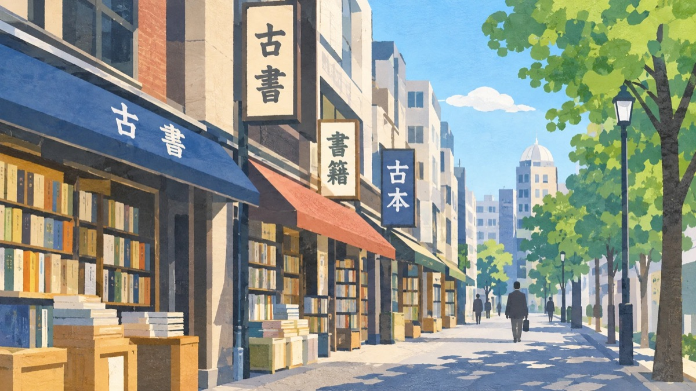
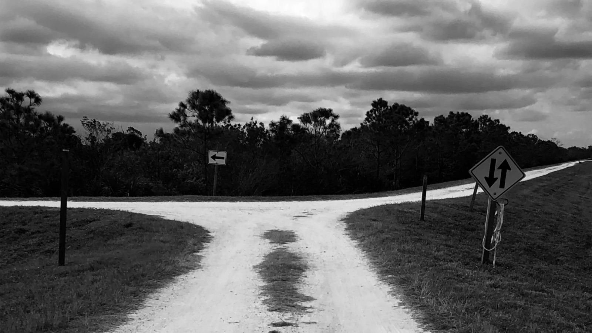

これからの
たとえば、こんなときに
- 今の
仕事を 続けるか 迷っている - 独立や
転職を 考え はじめた - 何かを
変えたいが、 どちらに 進めばいいか 見えない
ひとつでも
なぜ歩くのか
AIに
3時間の流れ
時間の
-
話す0:00〜0:50
これまでを
棚卸しする 落ち着いて
話せる カフェや 喫茶店で、 最近 気に なっている こと、 続けたい こと、 手放したい ことを 話して もらいます。 -
歩く0:50〜2:00
街を
歩く 気になる
場所や 店に 寄り道しながら、 歩きながらの 内省と いう、 いつもと 違う モードでの 思考を 深めます。 -
選ぶ2:00〜3:00
進む方向を
決める 落ち着いた
場所で、 進みたい方向を 決め、 あしたから できる 小さな 実験の 方針を 立てます。
たとえばこんなルート

晴天ルート：神保町
- 地下鉄
「神保町」駅の A7出口に 集合 - ギャラリー珈琲店・古瀬戸で
棚卸し - 三省堂書店 神田神保町本店や
古書店街を 歩く - 神田伯剌西爾で
方向を 決める
雨天ルート：丸の内
- 丸の
内オアゾ1階の おおひろば （○○ 広場）に 集合 - 丸善3階の
時間制ラウンジ 「丸善の 三階」か カフェで 棚卸し - 丸善の
1〜4階や 地下通路を 歩く - 丸善4階の
「M&C Café」で 方向を 決める
たとえばこんな問い
- この
1年で、 時間を 忘れたのは どんな ときですか - やめたいのに、
やめられていない ことは 何ですか - 足が
止まったのは どこですか。 なぜ そこで 止まったと 思いますか - 10年前の
自分が 今の 自分を 見たら、 何と 言いそうですか - 決めた
実験の ことを、 最初に 誰に 話しますか
ともに歩くひと

黒田悠介
キャリア研究家／ディスカッションパートナー
答えを
- キャリアアドバイザーと
して 働いて 以来、 4,000人以上の キャリア相談に 乗ってきました。 - 私自身も
転機を 重ねています。 会社員、 起業、 フリーランス、 経営陣などの 経験を 経て、 2026年10月に 再びフリーランスに なりました。 - 問いで
つながる コミュニティ 「議論メシ」 （対話の 場を 1300回以上 開催）と、 キャリアの 転機を シェアする コミュニティ 「あしたの 転機」 （メンバー1.6万人超）を 主宰しています。
著書
- 『自分の
本音を （インプレス、言葉に できる。 』 2026年） - 『コミュニティ経営の
教科書』 （翔泳社、2025年） - 『コミュニティシフト』（2024年）
- 『ライフピボット』（インプレス、
2021年）
料金と約束
| 料金 | 50,000円 税込。 |
|---|---|
| 時間 | 3時間 |
| 人数 | おひとりで |
| 場所 |
30分以内の |
| 支払い | 予約時に |
予約までの流れ
- 予約ページで
日時を 選ぶ
予約ページを開く ↗ - クレジットカードで
支払う - メールで
待ち合わせ場所を 決めるスタートしたい 駅と、 録音の 希望を お知らせください - 当日、
3時間を 一緒に 過ごす前日の 夕方に 天気を 見て、 晴天ルートと 雨天ルートの どちらに するか ご連絡します - 7日以内に
言語化レポートを 受け取る
約束できること
- 進みたい方向と小さな
実験の が、方針 3時間の 終わりに 決まっている こと - 言語化レポートを、
7日以内に お渡しする こと
約束できないこと
- 転職、
独立、 収入などの 結果は 保証しません - 「こう
すべきです」と いう 正解は お伝えしません。 決めるのは ご本人です - 転職先や
仕事の 紹介は しません
- 心身の
不調で、 医療や 専門的な カウンセリングが 必要な 状態の 方は、 先に 専門の 機関に ご相談ください。 - 合わせて
1時間ほど 歩きます。 歩くのが 難しい方は、 申し込みの 前に ご相談ください。 - キャンセルと
返金に ついてはキャンセルポリシーを ご覧ください。
よくある質問
雨の日はどうなりますか
屋内中心の
台風や
どれくらい歩きますか
合わせて
事前に準備することはありますか
準備は
話した内容は録音しますか
レポートを
録音と
詳しくはプライバシーポリシーを
どこで待ち合わせますか
中野駅から
当日にキャンセルできますか
ご予約日の
詳しくはキャンセルポリシーを
領収書は出ますか
お支払いの
2人での参加・研修費での申し込み・ギフトはできますか
いずれも

これからどこに進んでいくか
歩きながら考える3時間
日時を歩きながら